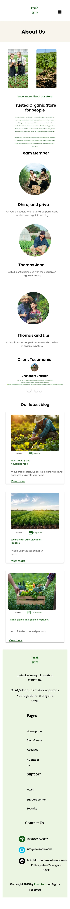
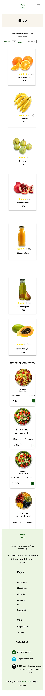
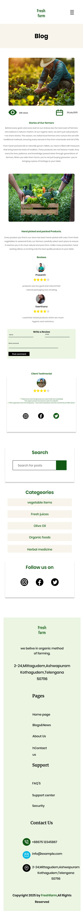
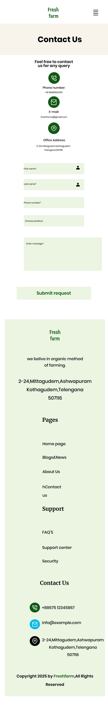
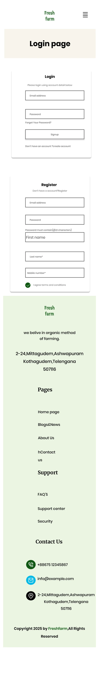

Website design
Fresh Farm.
An organic store website, where people buy organic fruits and vegetables straight from the farm, in a fresh, green look.
- Role
- UI Designer
- Type
- Website design
- Pages
- 6 pages
- Platforms
- Web & mobile
The front door
Home
A farm-to-table hero, why people choose the store, featured products, product facilities, trending bowls and salads, a client testimonial and the latest blog posts.
Who grows your food
About Us
The story of the store, a farm video, the team behind it, a client testimonial and the latest blog posts.


Fresh produce, ready to order
Shop
Organic fruits and juices with ratings and prices, per-page and sort options, and trending bowls and salads with calories, servings and a quick add button.


Stories from the farm
Blog
Farm stories and hand-picked products, customer reviews and a comment form, with a testimonial, search, categories and social links in the sidebar.


Get in touch
Contact Us
Phone, email and office address beside a short form: name, email, phone, product and message.


Sign in or join
Login & Register
Login and register side by side: email and password, password rules, name, phone number and terms.

